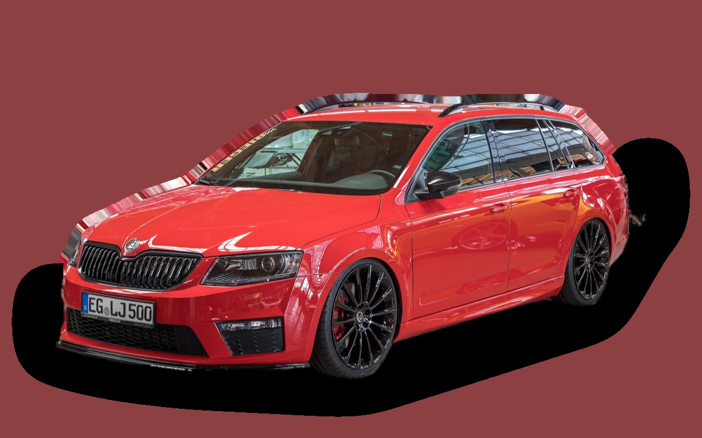
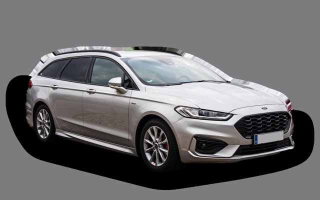
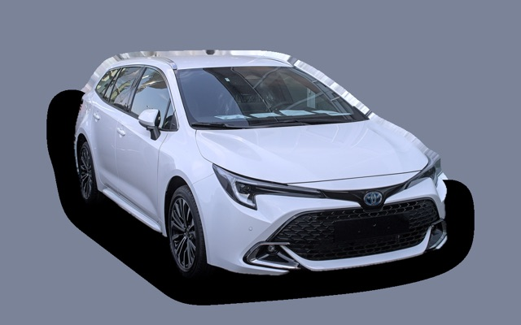
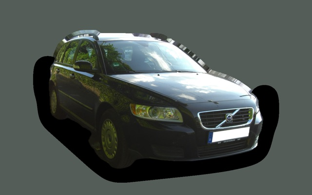
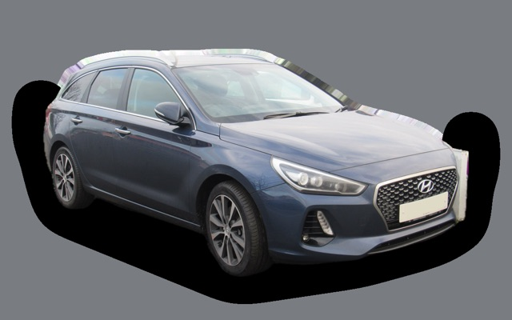

Vad kostar en Skoda Octavia Kombi III per månad?
En Skoda Octavia Kombi III från 2017 kostar cirka 3 229 kr i månaden, allt inräknat.
3 229 krper månad, årsmodell 2017
121 000 krpris, årsmodell 2017
242 200 krsenaste nypris
Bprisvärdhetsbetyg (2017)

.jpg){kind=link}
Månadskostnad per årsmodell
| Årsmodell | Version i beräkningen | Pris | Per månad | Betyg |
|---|---|---|---|---|
| 2020 | 1.4 TSI 150, Style | 190 000 kr | 3 692 kr | B |
| 2017 | 1.4 TSI 150, Style | 121 000 kr | 3 229 kr | B |
| 2014 | 1.4 TSI 150, Style | 71 800 kr | 2 890 kr | B |
Räknat på 5 års ägande och 1 250 mil per år, med bränslepriser från 2026-10-22. Månadskostnaden innehåller värdeminskning, drivmedel, service och reparationer, försäkring och fordonsskatt.
Så fördelas kostnaden för en 2017:a
- Värdeminskning: 916 kr/mån
- Drivmedel: 1 333 kr/mån
- Service och reparationer: 712 kr/mån
- Försäkring: 216 kr/mån
- Fordonsskatt: 52 kr/mån
Begagnatpriser i annonser
| Årsmodell | Medianpris | Annonser | Typiskt miltal |
|---|---|---|---|
| 2020 | 189 900 kr | 9 | 11 500 mil |
| 2019 | 134 400 kr | 13 | 15 600 mil |
| 2018 | 149 900 kr | 18 | 16 100 mil |
| 2017 | 139 800 kr | 11 | 16 900 mil |
| 2016 | 119 900 kr | 15 | 17 600 mil |
| 2015 | 109 000 kr | 14 | 18 600 mil |
| 2014 | 82 400 kr | 23 | 19 100 mil |
| 2013 | 83 700 kr | 11 | 19 600 mil |
Medianpriset i svenska annonser per årsmodell i oktober 2026 (källa: Blocket). Annonspriser är utgångspriser, och slutpriset kan bli lägre.
Motorer och versioner
| Motor | Drivmedel | Effekt | 0–100 km/h | Förbrukning (WLTP) | Räckvidd | Årsmodeller | Pristillägg |
|---|---|---|---|---|---|---|---|
| 1.4 TSI 150 | Bensin | 150 hk | 8,3 s | 5,3 l/100 km | – | 2013–2020 | – |
| 2.0 TDI 150 DSG | Diesel | 150 hk | 8,7 s | 4,4 l/100 km | – | 2013–2020 | +20 000 kr |
| 2.0 TDI 184 4x4 | Diesel | 184 hk | 7,6 s | 5 l/100 km | – | 2013–2020 | +51 700 kr |
- Utrustning: Style, L&K (+35 000 kr)
Fakta
- Kaross
- Kombi
- Årsmodeller
- 2013–2020
- Senaste nypris
- 242 200 kr
- Bagage
- 610 liter
- Euro NCAP
- 5 av 5 stjärnor
- Nybilsgaranti
- 3 år
- Driftsäkerhet
- 4 av 5
- Helförsäkring, uppskattning
- 5 300 kr/år
- Service, uppskattning
- 3 700 kr/år
Vanliga fel att ha koll på
- DSG-låda DQ200 (mekatronik, koppling), reparation cirka 20 000 kr
- Vattenpump och termostathus i plast läcker, reparation cirka 6 500 kr
- EGR och partikelfilter (TDI), reparation cirka 9 000 kr
- Haldex-pump (fyrhjulsdrift), reparation cirka 7 000 kr
- DSG-låda (mekatronik), reparation cirka 18 000 kr
Felen gäller vissa motorer och årsmodeller. I kalkylatorn räknas risken för just den version du väljer.
Fördelar och nackdelar
Fördel
Rymlig och pålitlig kombi som är billig begagnad.
Nackdel
Tillverkas inte längre.
Liknande bilar

Ford Mondeo Kombi3 229 kr/mån som 2019:a
Toyota Corolla Touring Sports3 177 kr/mån som 2023:a- Bild saknasSeat Leon Sportstourer3 289 kr/mån som 2023:a

Volvo V503 166 kr/mån som 2009:a Dacia Jogger3 111 kr/mån som 2023:a
Dacia Jogger3 111 kr/mån som 2023:a
Hyundai i30 Kombi3 043 kr/mån som 2022:a
Uppdaterad 2026-10-28 · annonsdata okt 2026